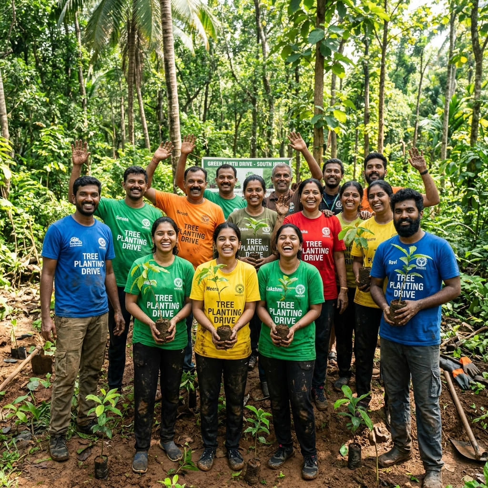

Jeevarasi — The Nature School is a one-of-a-kind educational and experiential park. A Pondicherry-based Trust initiative to bring people closer to the wild, focusing on creating awareness by educating the importance of species in their natural habitat and the need for conservation.
We have collaborated with 200+ schools and NGOs across the globe to spread awareness among students, corporates, entrepreneurs, and enthusiasts. We aim to bring back the age-old reality of safe coexistence between animals and humans.
Jeevarasi is more than just farmland away from the busy city — it is a place where you connect with nature at various levels, with a sustainable model of preserving and managing waste within the property for a better future.

Visionary behind Jeevarasi Trust, dedicated to bringing people closer to nature through experiential education and conservation in Pondicherry.
Co-founder of Jeevarasi Trust, championing wildlife welfare, animal rescue, and the trust's outreach initiatives across schools and communities.
Co-founder of Jeevarasi Trust, driving the conservation science and research programs and fostering citizen scientist engagement at the Nature School.
Animal care is a concept of experiential approach of educating the citizen scientist and enthusiast about the species of birds, reptiles, rodents, amphibians, fishes and mammals. Mammals that have been domestic pets over the years which have evolved closer to humans are also a part of the system such as several breeds of domestic cows, horses, goats, dogs and cats.
We majorly involve exotic species which are not found in the specific subcontinent of India and the associated islands. We create a closer relation with all the species at Jeevarasi and the citizen scientist would have a closer interaction and an experiential approach of learning about all the species present.
We aim to bring an incredible therapeutic experience with the help of animals — creating a comfortable space to overcome fears so children can realise their full potential as citizen scientists, enthusiasts, creators and conservationists.
Plant conservation is a concept of experiential approach of educating the citizen scientist and enthusiast about the species of plants. Exotic plants that are present throughout the world and that should be protected and conserved have been preserved at this particular property.
We majorly involve exotic species which are not found in the specific subcontinent of India and the associated islands. The enthusiast and the citizen scientist get to learn more on each and every plant, understand the need of conservation and protection of the same.
Protection of environment has always been our key motto and important role that we wish to play in the future. We aim at doing this by creating awareness programmes across schools, colleges, corporate companies and to small and larger business sectors.
Protecting environment by planting of trees, we aim at planting a minimum of 1,000 trees for each semester and installing nesting boxes for the breeding and conservation of species such as house sparrows which are in at most necessity in the current situation.
Educating the enthusiast on various species and their need of conservation and educating of several species and their importance in the particular environment. This centre aims at educating the people to become responsible citizen scientists who can spread the word of awareness, protection and conservation of species in any specific environment.
Experiential education is our preferred teaching approach as our guests get to understand things better when they have an opportunity to experience. We facilitate interactions that involve observation, feel, build, touch among other experiences.
A scientific approach in the development and promotion of awareness among the species, and creating a safe environment in the coexistence of the humans and the animals which we aim at a longer run could be achieved in the particular circumstances.
Research involves all the citizen scientists in research facilities so that they could help in the awareness and conservation of the specific species that are much needed in protection and conservation in the nature.
Our rescue centre serves as a dedicated space for the rescue, rehabilitation and protection of animals in distress — including stray dogs, abandoned pets and injured wildlife. We work to provide immediate care and long-term shelter to animals in need.
By creating a greater societal impact, we aim to reduce poaching and abandonment driven by lack of awareness. Every rescued animal becomes an ambassador for conservation and safe coexistence.
Jeevarasi is more than just farmland away from the busy city — it is a place where you connect with nature at various levels, with a sustainable model of preserving and managing waste within the property for a better future.
Our experiential park welcomes visitors, students, corporates and enthusiasts to experience responsible interactions with nature — creating memories that inspire lasting commitment to conservation.
Religion always involves a specific culture and tradition of any particular place and destination. We aim at protecting and preserving the culture for better future, as all cultural and religious practice involves in the protection of species at various levels.
Charity — serving the people and animals in need are at most importance. We aim at creating a world of satisfaction and peace, creating funds and collecting charity for helping people and animals in need.
Art — special focus on developing various skills such as drawing, painting and other essential potential skills in digital or non-digital medium.
We aim at bringing back the age-old reality of safe coexistence between animals and humans, reconnecting them safely in the natural world.
Our preferred teaching approach involves observation, feel, build, and touch. We bring back the child's inborn love for nature and curiosity.
We educate about the importance of species in their environment and spread the word of awareness, protection, and conservation at every level.
Serving people and animals in need is of utmost importance. We create funds and collect charity to help those who are suffering.

Social Welfare
Working for a social cause has all the importance for the society and showcasing the society impact factor for the particular activity that we involve ourselves in such as stray dogs rescue, rescue of all pets and protection of the same by creating a greater society impact factor.
We aim at a larger citizen scientist audience who would help our aim of spreading the word of awareness and education at various levels. At core, we would want to make sure there is a safe coexistence between people and animals.